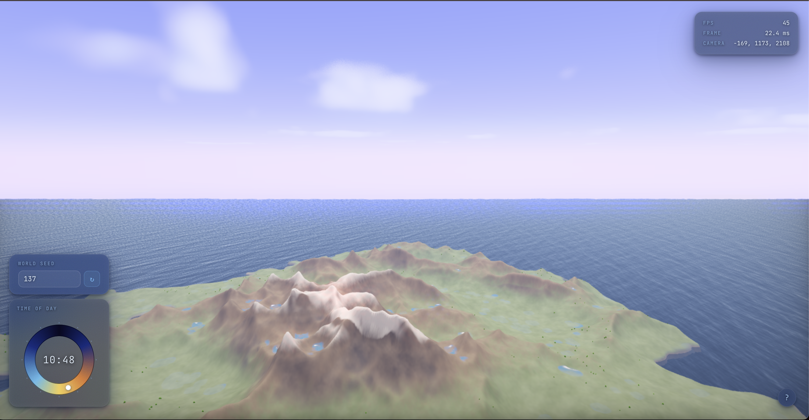
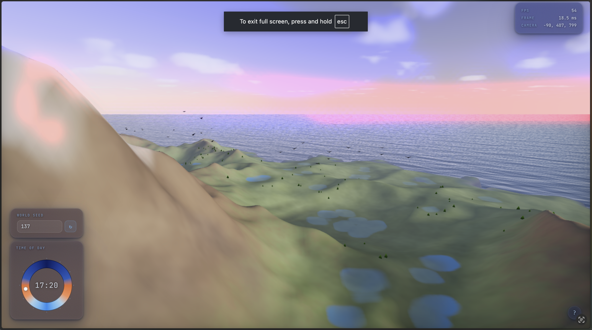

- Milestone Video: YouTube
- Presentation Slides: Slides
- Final Report Webpage Final Webpage
Terra is a real-time, procedurally generated Earth-like planetary renderer built entirely on WebGPU and WGSL, running in a browser with no server-side computation. The system synthesizes a complete natural environment on the GPU with continent-scale terrain shaped by simulated hydraulic erosion, an FFT-driven ocean with a physically derived wave spectrum, volumetric clouds lit by single-scattering, a physically-based atmosphere computed from precomputed transmittance lookup tables, instanced animated vegetation, and a night sky complete with procedurally placed stars, a galactic band, and a moon with limb darkening. A controllable dynamic day-night cycle unifies all these subsystems under a single moving sun/moon direction, and HDR bloom with ACES tone mapping delivers a cinematic final image.
Terra is a fully browser-based 3D procedural world engine built on WebGPU with zero runtime dependencies. The pipeline is divided into an initialization phase (terrain generation, erosion, normal/AO computation, atmosphere LUT precomputation, vegetation placement) and a real-time render loop (ocean FFT, atmosphere, terrain, vegetation, ocean, bloom). All heavy computation runs as GPU compute shaders in WGSL.
Terrain Generation & Erosion
A 512×512 heightmap uses 7-octave fBm Perlin noise (Perlin, 1985) with domain warping (Quilez) to break grid alignment, plus a radial island falloff and Gaussian blur.
Reference Variation Note: Perlin (1985) describes single-octave noise; we add fBm stacking and domain warping for continent-scale variety.
Stream Power Erosion (Willgoose et al., 1991) carves valleys via
dh/dt = −K · Am · (∂h/∂x), with K spatially modulated for rock-layer banding.
Thermal erosion across three intensity zones (KT = 0.025 / 0.010 / 0.012) redistributes material on over-steepened slopes, producing talus fans. Each outer iteration runs 40, 6, and 12 thermal passes respectively.
Uplift / isostatic rebound (rate 0.0003) maintains topographic relief throughout the simulation.
HBAO (Bavoil et al., 2008) and surface normals are computed once at init to drive per-pixel terrain lighting.
Ocean
The ocean uses Tessendorf-style FFT wave synthesis (Tessendorf, 2001) driven by the Phillips spectrum
with wind speed 20 m/s, wind direction [1.0, 0.8], amplitude A = 80, and gravity
dispersion ω(k) = √(g|k|). Complex wave amplitudes are animated each frame in
frequency space, then the surface is recovered via a 2D inverse FFT implemented
entirely in a WGSL compute shader: a Cooley-Tukey (Cooley & Tukey, 1965) radix-2 butterfly pipeline with bit-reversal
permutation, 7 butterfly stages for the 128-point transforms, and shared-memory caching to reduce
global memory bandwidth. The water shader applies Fresnel reflections and foam masking at wave crests.
Reference Variation Note: We implement a subset of Tessendorf's full model: only height and slope displacement are computed; the choppy horizontal (Gerstner-style) displacement described in the paper is omitted to stay within the 128×128 grid budget.
Atmosphere & Sky
Sky rendering follows the precomputed atmospheric scattering approach of Bruneton & Neyret (2008), building a 256×64 transmittance LUT at startup encoding Rayleigh and Mie optical depth over 40 integration steps.
Reference Variation Note: The full Bruneton & Neyret framework precomputes irradiance and in-scatter LUTs for multi-order scattering; we implement only single-scattering with the transmittance LUT for a practical real-time trade-off.
textureLoad calls for WebGPU portability.
Sun & moon disks are rendered as analytical disks; the moon adds limb darkening (1 − 0.35(1 − √μ)) and a soft corona glow.
Stars & Milky Way (Quilez) use per-cell hashing in azimuth/altitude space with galactic-latitude density variation, and a three-octave noise band with a galactic-center luminosity boost.
Volumetric clouds are ray-marched between 2200–4500 m using 4-octave value noise, Beer–Lambert transmittance, and a Henyey-Greenstein phase function (g = 0.65 / −0.30) with four shadow-ray probes per sample.
Reference Variation Note: The standard Henyey-Greenstein uses a single lobe; for clouds we use a dual-lobe powder-sugar approximation to reproduce silver-lining and dark-center effects.
Vegetation
A GPU compute shader places up to 50,000 grass instances by testing per-texel height (0.12–0.28 normalized), surface normal (N·y ≥ 0.75 for upright surfaces), and log flow-accumulation (≤ 2.2 to exclude flood plains). An atomic counter fills an instance buffer consumed by the grass vertex shader, which synthesizes crossed-quad geometry with per-vertex tapering and sinusoidal wind sway.
Bird Flocking
Bird flocking is simulated using an orientation-based social model inspired by Hoetzlein's Flock2 (2024). Unlike classical Reynolds boids,
which apply explicit separation, alignment, and cohesion force vectors, Flock2 treats neighbor influence as a desired turn rate that indirectly steers each bird's heading
through an aerodynamic model. Each bird perceives a local neighborhood, computes a weighted desired orientation from visible neighbors, and adjusts its heading at a rate
limited by a realistic turning cost.
Reference Variation Note: We adopt Flock2's orientation-based steering model but omit its full aerodynamic lift and drag simulation, instead using a simplified heading-blend that achieves visually plausible flocking at lower per-bird compute cost.
Post-Processing
An HDR bloom pipeline thresholds bright pixels via a soft-knee luminance curve (threshold 0.80, knee 0.30), downsamples through 4 cascade levels with a 2×2 box and cross-tap filter, upsamples with weighted taps, then composites onto the HDR buffer. The full image is tone-mapped with ACES (Academy, 2014) and gamma-corrected (γ = 2.2) before display. 4× MSAA is applied at the render target level.
Problems Encountered & Lessons Learned
- Reference fidelity vs. runtime constraints: Several techniques from our references required multi-pass precomputation or runtime dependencies that would have introduced unacceptable load times in a browser with no server backend. We prioritized keeping the renderer fully real-time by implementing the most impactful subset of each feature — for example, single-scattering-only atmosphere and height-only ocean displacement — rather than a complete but slow faithful reproduction.
- CPU vs. GPU workload partitioning: Deciding which passes to run on the CPU versus as GPU compute shaders was a recurring challenge. Heightmap generation stayed on the CPU for flexibility, while erosion, AO, normals, and ocean FFT moved to GPU compute shaders. Getting dispatch ordering and explicit memory barriers correct between dependent passes (MFD routing → accumulation → erosion) took significant iteration.
- Integration across subsystems: Building a project where terrain, ocean, atmosphere, vegetation, birds, and post-processing all share a single moving sun direction and HDR buffer required careful interface design. Subtle bugs — such as lighting inconsistencies between subsystems or z-fighting at the ocean-terrain boundary — were hard to isolate because they only appeared when multiple systems were running together.
- Brainstorming before implementation: Early on, team members would begin implementing a subsystem before fully cross-referencing the relevant papers and discussing how it would interact with the rest of the pipeline. This led to redundant work and some architectural backtracking. We learned to complete a shared design and reference review before writing any shader code, which saved significant time in the later stages of the project.
The images below demonstrate Terra's dynamic day-night cycle and terrain rendering across different times of day and viewing angles with special features included. All scenes are generated procedurally in real time within the browser.




-
Bruneton, E. & Neyret, F. (2008). Precomputed Atmospheric Scattering.
Computer Graphics Forum (EGSR). — Transmittance LUT + in-scattering formulation used in
atmosphere_precompute.wgslandatmosphere.wgsl. -
Tessendorf, J. (2001). Simulating Ocean Water. SIGGRAPH Course Notes.
— Phillips spectrum and gravity-wave dispersion relation for
ocean_fft.wgsl. - Cooley, J. W. & Tukey, J. W. (1965). An Algorithm for the Machine Calculation of Complex Fourier Series. Mathematics of Computation. — Radix-2 butterfly FFT algorithm implemented in the IFFT compute shader.
-
Tarboton, D. G. (1997). A New Method for the Determination of Flow
Directions and Upslope Areas in Grid Digital Elevation Models. Water Resources Research.
— Multi-Flow Direction (MFD) routing in
erosion.wgsl. - Willgoose, G., Bras, R. L., & Rodriguez-Iturbe, I. (1991). A Coupled Channel Network Growth and Hillslope Evolution Model. Water Resources Research. — Stream Power Erosion model basis.
-
Bavoil, L. et al. (2008). Image-Space Horizon-Based Ambient Occlusion.
SIGGRAPH Talks. — HBAO technique adapted for heightmap-space AO in
ao.wgsl. - Henyey, L. G. & Greenstein, J. L. (1941). Diffuse Radiation in the Galaxy. Astrophysical Journal. — Phase function used for Mie scattering and cloud single-scattering.
- Perlin, K. (1985). An Image Synthesizer. SIGGRAPH Proceedings. — Perlin noise used for heightmap fBm generation and cloud density fields.
- ACES Color Encoding System. Academy of Motion Picture Arts and Sciences, 2014. — Tone mapping curve used throughout the pipeline.
- Quilez, I. Procedural techniques: domain warping, value noise, hash functions. iquilezles.org. — Informed heightmap domain warping and the hash-based star placement scheme.
Sarvagya: Worked mainly on the terrian portion, including the land and also vegetation, stream power erosion, and thermal effects. Also worked on atmospheric clouds to make them more realistic and fixed up ambient lighting.
Mohan: Worked on water and also birds. Researched and implemented tessendorf FFT and created realistic waves with respect to wind and gravity.
Owen: Worked on the atmosphere and sky, doing lots of work on the sun and moon and the lighting during sunrise and sunset hours. Also built initial sky textures for day and night sky.
Afreen: Worked on the initial terrain heightmap generation. Also built the post-processing pipeline with HDR bloom, ACES tone mapping, and MSAA."